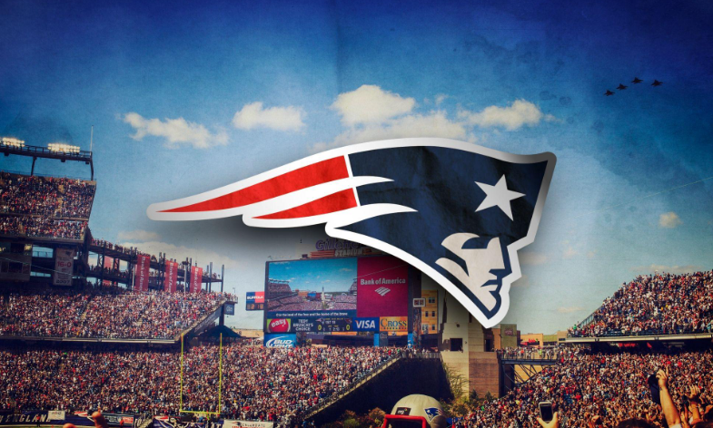
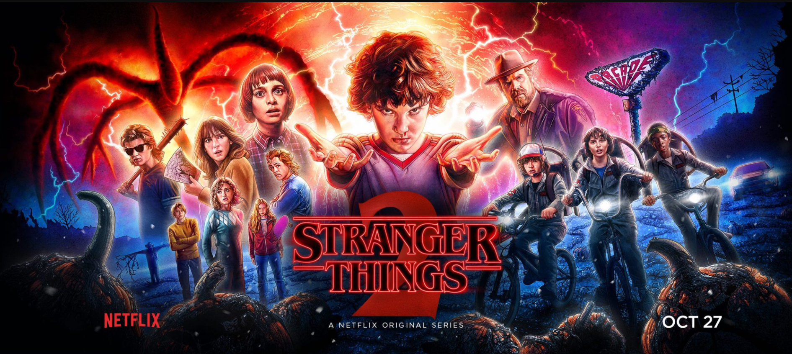

Cybersecurity
Building deeper skills in endpoint security, identity, network defense, incident response, risk, and security operations.
The areas I keep developing outside day-to-day support work, along with a few interests that keep me balanced and curious.
Areas I’m actively developing through graduate work, labs, certification preparation, and independent projects.
Building deeper skills in endpoint security, identity, network defense, incident response, risk, and security operations.
Expanding from endpoint and systems support into cloud-connected infrastructure, scalable administration, and resilient services.
Using PowerShell, Python, Proxmox, Windows Server, Linux, and virtualization to automate repetitive work and build hands-on admin experience.
Interests outside IT that keep me competitive, consistent, and engaged.

I enjoy football, basketball, and consistent gym training. The discipline and routine carry over directly into how I approach work and long-term goals.

I enjoy strong storytelling, suspense, and strategy-driven shows and films, especially series that reward attention to detail.